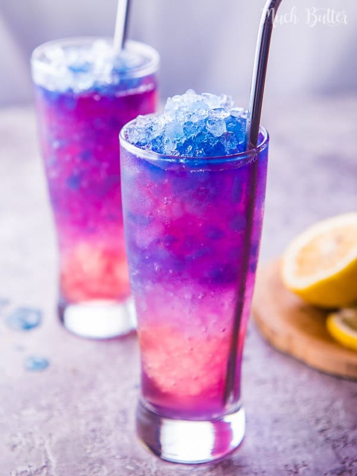

Magic Galaxy Squash

Description
Magic galaxy squash is a frozen Butterfly Pea Flower tea and a Rosella tea mixed with lime lemon soda. Perfect for hot summer!
Ingredients
- 10 Dried Butterfly Pea Flower
- 400 ml Sprite frozen
- 400 ml Sprite cold
- 1 Lemon
- 5 Dried Rosella Flower
- 750 ml Water
Steps
- Heat 500ml water until boiling.
- Pour hot water over butterfly pea tea flower until it the water turns blue. Set aside until cool and freeze over night on ice cube tray.
- Boil 250ml water with rosella tea flower for 5 minutes. Set aside until cool.
- Crush frozen Sprite and frozen butterfly pea tea with blender. Set aside.
- Squeeze lemon. Set aside.
- First put rosella tea into a glass about 1/5 of the glass height, then crushed frozen sprite (1/3 of the glass height), crushed frozen butterfly pea tea (1/3 of the glass height), 1 tbsp lemon juice, 100ml cold sprite, and crushed frozen butterfly pea tea (until the glass is full) sequentially.
- Repeat for 3 glasses.
- Enjoy!
Home Page